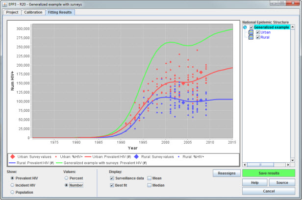
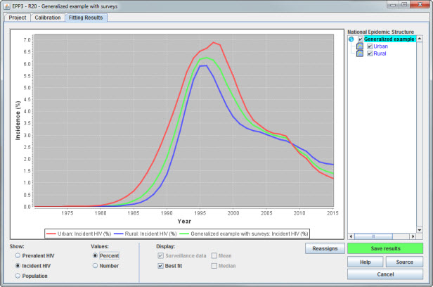
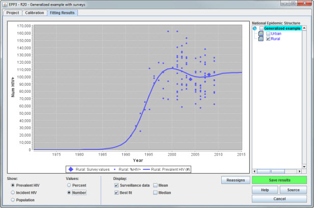
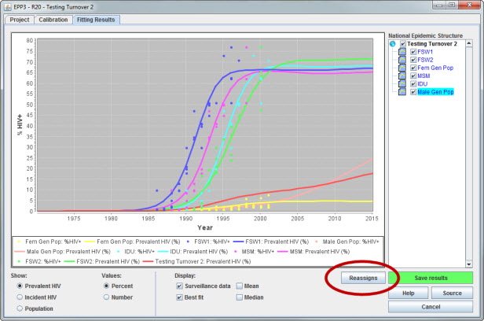
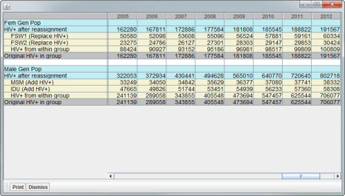

The Fitting Results page is the final page in EPP. It gives you an opportunity to review all of your sub-population projections and see what they look like when combined into a national epidemic. When you click Save results EPP will hand off the incidence and prevalence from your national projection to Spectrum. It then exits and you can use the Spectrum Results menu item to view HIV prevalence, age structure, female/male ratios, new infections, ART need, and a large number of other outputs for informing national programs and anticipating future needs.
The Fitting Results page consists of a large graph for reviewing your national and sub-population results and several control panels.

The sub-population selection panel, highlighted in the green box under National Epidemic Structure, allows you to select which sub-populations are to be shown in the graph. To display a specific sub-population, just check its box. If you wish to see the combined national results check the national epidemic name at the top.
The show panel, shown in the red box on the lower left-hand side, selects what will be displayed in the graph. On the Fitting Results page all calibrations are included in the graphs displayed. The options available to you here are:
The figure below shows the incidence display for the fit shown above with all sub-populations and the national epidemic selected by checking the boxes under National Epidemic Structure.

The display panel, shown in the blue box in the lower middle of the first page above, allows the user to choose what will be shown in the graph. Options available are:
All information presented for a particular sub-population is displayed in the same color, as shown in the above below. Because it is an important indicator of the overall epidemic fits, any survey data entered on the Surveys page is always displayed in the graph panel as diamonds.

On the right-hand bottom of the Fitting Results page is the Save results button. This button is what sends the results to Spectrum. When you click this button, Spectrum will get access to the combined national incidence and prevalence from all of your fits. This will include the effects of any calibrations you have applied as well as turnover in different sub-populations. Should you exit this page with the Cancel button or by closing the window with the small red x in the upper right-hand corner, you will not save the results in a way that Spectrum can access them. So be sure to click the green button before leaving the page.
If you have a concentrated epidemic with turnover you can view the effects of turnover by clicking on the Reassigns button highlighted in red below.

This will bring up the reassignment table, shown here, which displays the effects of reassignment on prevalence and all the groups with turnover or receiving turnover.

This table has several entries, because both male and female populations have been fit with turnover active. Examine the entries under "Fem Gen Pop" at the top of the table.
In the case of "Replace prevalence", the number of infections before and after reassignment will always be the same, because we are saying that the ex-sex workers are already captured in the surveillance. What varies is the number of infections that occur within this group. Thus in this example in 2011, we are saying that of 188,882 current HIV infections, 59,161 are from ex-sex workers leaving the FSW1 group, 29,853 are from the FSW2 group, and the other 99,809 occurred through other routes (most likely husband to wife transmission).
In the lower part of the table are similar numbers for the male population (“Male Gen Pop”). Here, the "Male general population" had the number of total infections shown in the final line in gray (625,544) before population turnover was included. Turnover, in this case using “add prevalence”, which increases the overall prevalent HIV, brought the total number in 2011 to 720,645 shown in the blue line labeled “HIV+ after reassignment”. Each of the MSM and IDU groups adds to the overall number of infections in each year. For example, in 2011 there were 37,741 additional infections from ex-MSM and 57,360 from ex-IDU.
As these figures show, with “Add prevalence”, the numbers of infections among former members of sub-populations at higher risk simply get added to whatever baseline number of infections might have been there already from fitting the surveillance data in the receiving group.